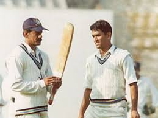

Never Ending Journey!! 
The Beginning
He was born in Ranchi, Bihar (now Jharkhand), on July 7, 1981. His mother, Devaki Devi, works from home, while his father, Pan Singh, was a junior manager at MECON, a Ministry of Steel PSU. He attended school in Shyamali, near Ranchi, Jharkhand.
First Step
Dhoni did his schooling at DAV Jawahar Vidya Mandir where he started playing football as a goal keeper but later moved to play cricket on the suggestion of his coach Keshav Banerjee.From 2001 to 2003, Dhoni worked as a Travelling Ticket Examiner (TTE) at Kharagpur under South Eastern Railway zone of Indian Railways.He played as a wicket-keeper for Commando cricket club from 1995 to 1998 and Central Coal Fields Limited (CCL) team in 1998.At CCL, he batted higher up the order and helped the team qualify to the higher division. Based on his performance at club cricket, he was picked for the 1997/98 season of Vinoo Mankad Trophy under-16 championship.In the 1998–99, Dhoni played for Bihar U-19 team in the Cooch Behar Trophy and scored 176 runs in 5 matches. In the 1999–2000 Cooch Behar Trophy, the Bihar U-19 cricket team made it to the finals, where Dhoni made 84 in a losing cause.Dhoni's contribution in the tournament included 488 runs in nine matches with five fifties, 17 catches and seven stumpings.Dhoni made it to the East Zone U-19 squad for the C. K. Nayudu Trophy in the 1999–2000 season and scored only 97 runs in four matches, as East Zone lost all the matches and finished last in the tournament.
Debuting In Blue
Dhoni performing well for the India A squad, he was picked in the ODI squad for the Bangladesh tour in December 2004.Dhoni made his debut in the first match of the series and was run out for a duck.Dhoni was picked for the subsequent ODI series against Pakistan.In the second match of the series in Visakhapatnam, Dhoni playing in his fifth one-day international, scored 148 runs off 123 deliveries which surpassed the earlier record for the highest score by an Indian wicket-keeper.Dhoni played in the Sri Lankan bilateral ODI series in October–November 2005 and was promoted to No. 3 in the batting order in the third ODI at Jaipur where he scored an unbeaten 183 runs off 145 balls, winning the game for India.
Bleeding in Blue
Dhoni was appointed as the captain of the Indian squad for the inaugural World Twenty20 in September 2007.Dhoni led India to victory in the tournament after defeating Pakistan in the final.Dhoni was appointed as the captain of Indian cricket team in all formats later.

2011 WORLD CUP
Dhoni led the Indian squad for the 2011 Cricket World Cup co-hosted by India.India won its second ever ODI world cup after defeating Sri Lanka in the final with Dhoni being named man of the match for scoring an unbeaten 91.In December 2012, Pakistan toured India for a bilateral series for the first time in five years and Dhoni top-scored in all the three matches of the series with a century in the first ODI at Chennai.Dhoni led India to victory in the 2013 ICC Champions Trophy and became the first and the only captain in international cricket to claim all ICC limited overs trophies. In the rain-shortened final against England, India won by five runs on DLS method though Dhoni himself was out for a duck.He was also named as captain and wicket-keeper of the 'Team of the Tournament' by the ICC.
CSK - Frnachise SECOND HOME (Dhoni aka THALA)
Dhoni, known as CSK's "Thala" (leader), captained the franchise to ten finals in their first 14 IPL seasons and won them five titles - in 2010, 2011, 2018, 2021 and 2023 . He's led them to the playoffs in 12 editions, making them the most consistent team in the IPL.Dhoni was bought by CSK at the first IPL auction in 2008 and - barring a handful of games in 2022 - has been their captain ever since. No other player has led an IPL team for so long. Only when CSK was banned for two years on corruption charges - in 2016 and 2017 - did Dhoni play for another team in the IPL: Rising Pune Super Giant(s).
SOCIAL MEDIA PROFILES
 MSD Chennai IPL
MSD Chennai IPLw3schools w3schools